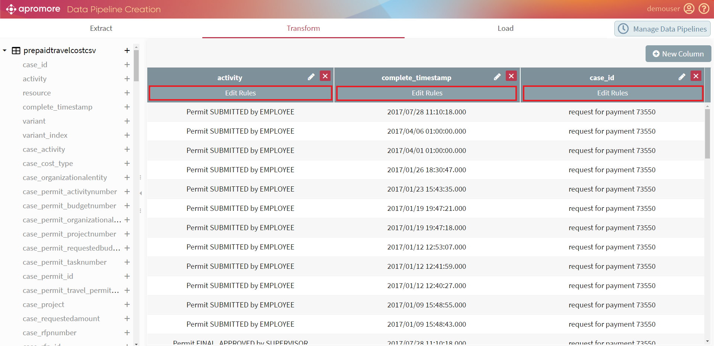

The Create data pipeline plugin, also referred as the ETL plugin, allows users to compose event logs from one or more tables or data sources.
It aims to integrate data from multiple sources by extracting, transforming, and loading to gain essential business insights for competitive advantage.
To define a data pipeline, click on Create data pipeline button.
Note
We can also select the Create data pipeline option from the File menu drop-down.
The Extract-Transform-Load view appears after clicking on create data pipeline.
Note
We can switch between three main views. However, to create the insightful result, it is essential to complete steps in the default order: Extract - Transform - Load.
We can extract data through two options – Local File System and DB Connections.
The corresponding buttons are placed in the left pane right under the Extract view.
Note
We can extract tables from relational databases and upload files in CSV and Parquet formats from the local system.
To upload a file from the personal computer, click on the icon in the right corner of the Local File System.
To begin uploading a file from the database, click on the “+” icon in the right corner of the DB Connections.
When Add New Database Connection window appears, insert all the details, choose the suitable options from the Database Type and Connection Type drop-downs and click on Connect.
To delete a file, click on the Trash bin - right next to it.
When at least 2 logs are uploaded, merge them by selecting the relevant join type from the Join Type drop-down menu and appropriate keys.
INNER JOIN - Returns records that have matching values in both tables;
FULL JOIN - Returns all records when there is a match in either left or right table;
LEFT JOIN - Returns all records from the left table, and the matched records from the right table;
RIGHT JOIN - Returns all records from the right table, and the matched records from the left table;
After all the files are uploaded, table keys and the join type are chosen, click on Submit.
The table obtained by joining the two logs appears right beneath the table and join selections.
There are 2 main areas in the Transform view - the list of tables containing all the columns from the extracted logs (marked blue) and the transformed table (marked red).
Note
To complete transformation, we must select at least three compulsory columns: case id, activity, and timestamp
To add the column from the list to the transformed table, click on the “+” button next to the column name.
Note
In the case of large logs, the addition of columns might take some time. Do not click on the same column several times to prevent column duplicates in the transformed table.
To add the whole extracted table to the Transformed table, click the “+” button next to the table name. The tables are marked as
To rename the column, click on right next to the column name.
Warning
Spaces in the column name aren’t supported.
To delete the column from the Transformation table, click on the red “X” button next to Rename.
Note
If the column was deleted by mistake or becomes necessary, we can easily add it to the table again from the columns list.
To add a customized column that is not present in any of the tables, click on + New column button placed in the upper right corner beneath Manage data pipelines button.
After a new column window appears, enter the new column name and click Create.
To check or change the values of the column, click Edit rules right beneath the name of the necessary column.

Edit rules window appears. The default rule is displayed. In addition to different join operations, we can create columns in the event log by composing existing columns using arithmetic, concatenation, and find-and-replace operations. For example, you can add a Cost column to an event log and compute this cost based on the hourly rate of your resources and the duration of tasks.
We can add a new rule by clicking + Add new rule.
To apply the rule, after the condition is set, click on OK.
When we click on Load view, the transformed log is displayed.
Click on Detect to automatically detect encoding option.
We can opt not to import a column by attaching the Ignore tag to it. To make it easier to ignore multiple columns, we can click on the Event attribute -> Ignore button at the upper-left corner. From that point on, any column we select becomes tagged with Ignore.
Similarly, if we need to tag multiple columns as Event attribute, we can click on Ignore –> Event Attribute in the upper-left corner next to Event attribute -> Ignore. From that point on, any column we select becomes tagged with Event Attribute.
Click on Upload Log to finish the import.
The Save Log As dialog box appears. Enter the log name and choose the destination folder from the drop-down. Click on Upload to successfully import the log into Apromore.


 right next to it.
right next to it.

{kind=link}
 right next to the column name.
right next to the column name.